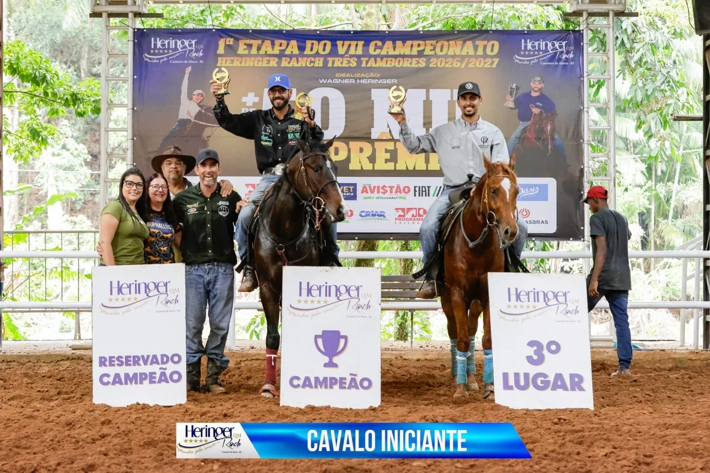

B2B Ranch horses at round 1 of the 6th Heringer Ranch Championship
B2B Ranch results at round 1 of the 6th Heringer Ranch Championship, with wins in Ladies, Youth, Tira-Teima and the Rodeo Final.

- 3rd · Open Gelding: B2B Merlin Ta Fame, Keverson de Souza
- 2nd · Potro do Futuro: B2B Apollo Rolls, Keverson de Souza
- 2nd · Open Senior: B2B Quaker Tux Guy, Keverson de Souza
- 1st · Ladies 2D: B2B Reality Zorrero, Maria Isabel
- 1st · Junior Riders: B2B Olivier Rolls, Miguel Alves
- 1st · Youth A: B2B Olivier Rolls, Miguel Alves
- 1st · Tira-Teima 2D: B2B Runnerway Rolls, Cláudio Gualberto
- 1st · Rodeo Final: B2B Merlin Ta Fame, Raphaela Moutinho
Once again, the strength of our breeding program showed all its talent in the arena.
B2B Ranch · Passionate about great horses